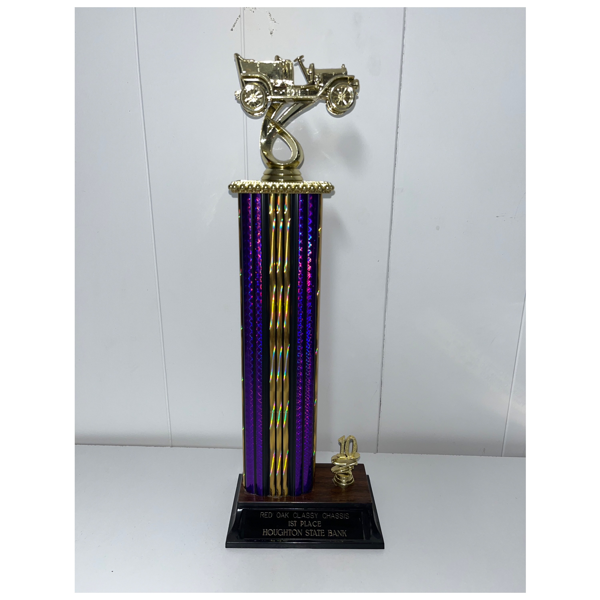

KENNY'S HOBBIES AND ACHIEVEMENTS
Trophies Won
After meticulously crafting his '95 Chevy Blazer from the ground up, Kenny proudly showcased his craftsmanship by entering it into several car shows. With each display, he captivated onlookers with the intricacy of his customizations, earning admiration for his attention to detail and passion for personalization. The car became a tangible representation of his dedication to the art of automotive modification, garnering recognition and accolades within the enthusiast community.


Car Shows
When Kenny isn't immersed in the world of customizing cars, he finds solace and inspiration by attending car shows in his free time. It's not just a hobby for him; it's a way to stay connected to the automotive community, to admire the creativity of others, and to gather ideas for his next project. Whether he's marveling at vintage classics or admiring modern marvels, car shows serve as a continual source of passion and enthusiasm for Kenny, reaffirming his love for all things automotive.
Cars Worked On
When Kenny isn't busy tinkering with his own set of wheels, he finds joy in extending a helping hand to his friends and their automotive endeavors. Among his circle, Steve Kaurus stands as a prime example of Kenny's goodwill, having enlisted his expertise on several occasions to breathe new life into his beloved rides.
Their friendship forged through a mutual passion for all things automotive, Kenny's garage became a hub of camaraderie and grease-stained collaboration. Whether it's fine-tuning an engine, fixing a stubborn transmission, or simply offering sage advice on vehicle maintenance, Kenny is always ready to roll up his sleeves and dive into the intricacies of automotive repair.